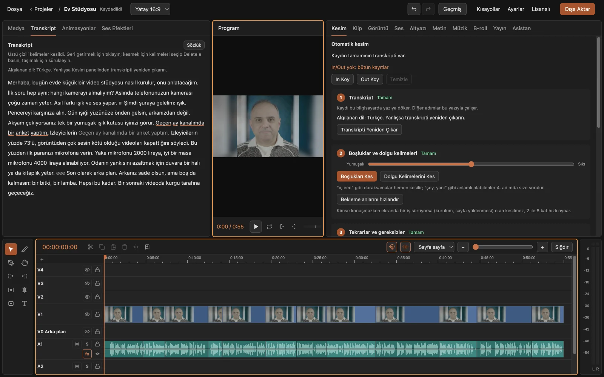

KILAVUZ
Kilnframe Desktop Kılavuzu
BURADAN BAŞLA
İlk videon
Ham kayıttan dışa aktarılmış videoya on adım: transkripti çıkar, boşlukları ve tekrarları kes, animasyon ve altyazı ekle, ses seviyesini ayarla, YouTube için dışa aktar.
Adım adım oku →
Paneller
- Medya
- Transkript
- Animasyonlar
- Ses Efektleri
- Program
- Timeline
- Kesim
- Klip
- Görüntü
- Ses ve Mikser
- Altyazı
- Metin, şekiller ve çıkartmalar
- Müzik
- B-roll
- Yayın
- Asistan
Rehberler
- Kelimeleri düzeltmek ve sesle düzeltmek
- Animasyon stilleri ve kendi stilin
- Renk
- Ekran eğitimleri
- Ekranı ve kamerayı kaydet
- Çoklu kamera ve konuşmacılar
- Yüz ve alan bulanıklaştırma
- Yeşil perde
- Hareket ve anahtar kareler
- Hız, ağır çekim, donmuş kare ve ters
- Kurgular
- Kısa videolar
- Çeviri ve seslendirme
- Konudan hikaye
- Marka kitleri ve yazı tipleri
- Görüntülerde bul
- Dışa aktarma
- Süren işler ve sorulan işler
Yapay zeka bağlantıları
- Kilnframe yapay zekayı nasıl kullanır
- Claude ya da ChatGPT aboneliğinle
- API anahtarları
- Yerel modeller
- Bulutta transkript
- Yapay zeka asistanlarını bağla (MCP)
Hesap ve gizlilik
- Lisans ve deneme
- Güncellemeler
- Uygulamada gizlilik
Başvuru
- Klavye kısayolları
- Ayarlar
- Bilinen sınırlar
Yardım
- Sık sorulanlar
- Sorun giderme
- Hata bildir
Platformlar
- Mac
- Windows (Microsoft Store, Beta)
- Linux (Beta)